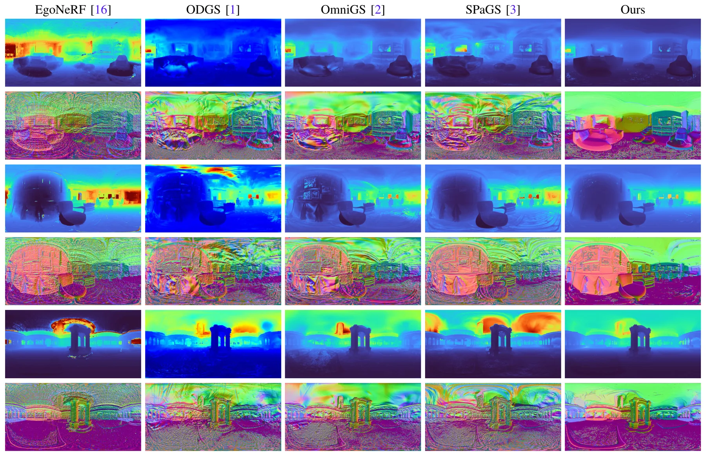
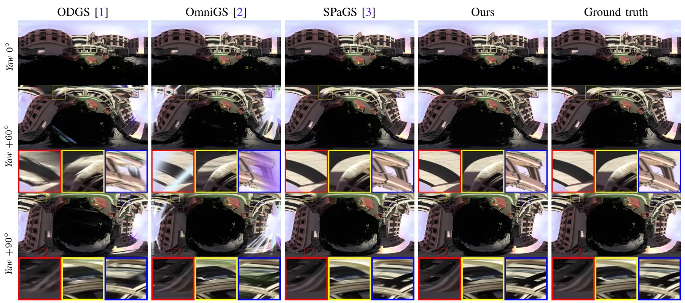
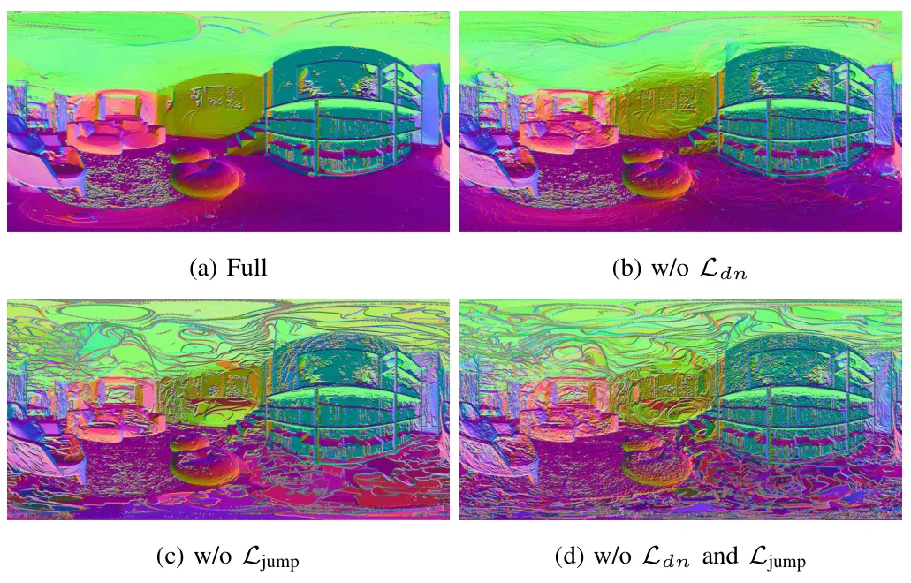
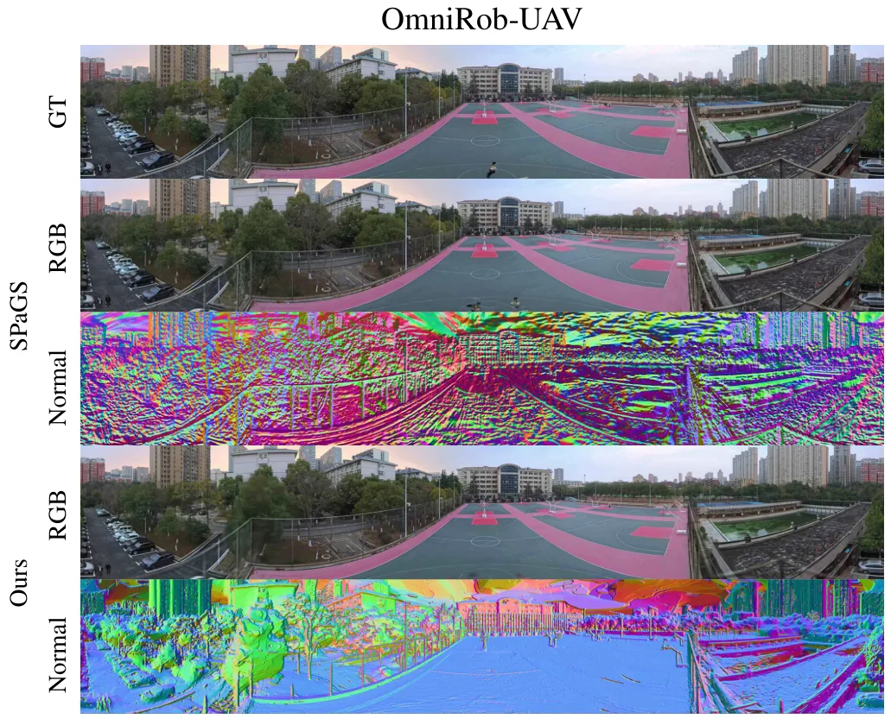
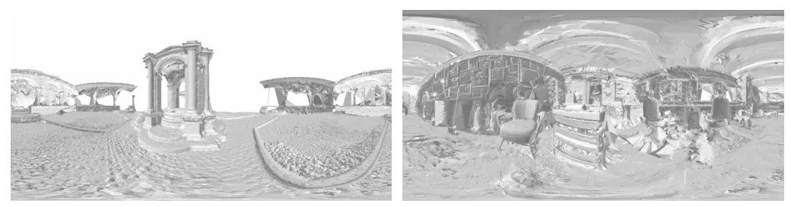
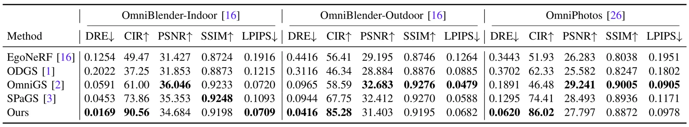
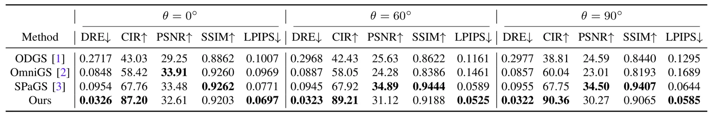
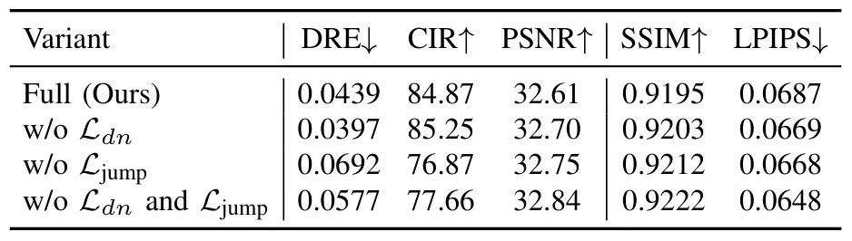
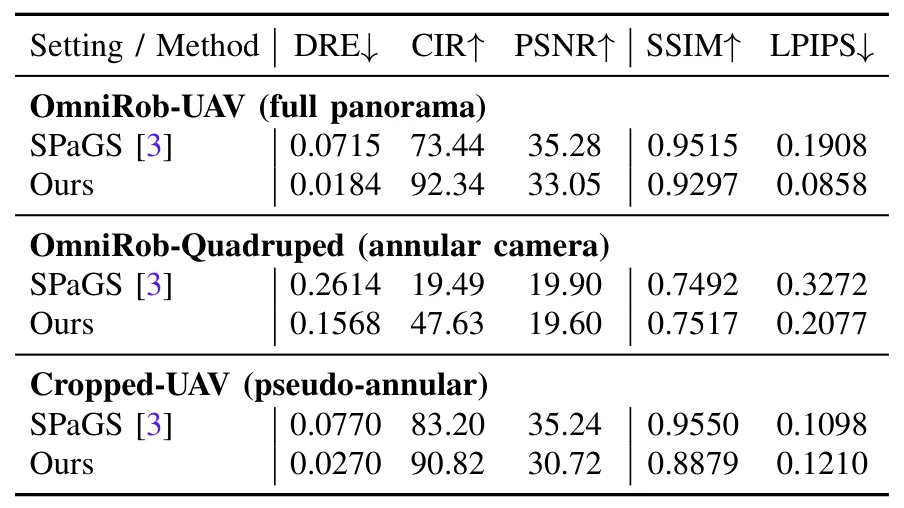

Spherical-GOF：面向三维场景重建的几何感知全景 Gaussian Opacity FieldsSpherical-GOF: Geometry-Aware Panoramic Gaussian Opacity Fields for 3D Scene Reconstruction
直接命中全景三维重建、3DGS 与机器人数据，且给出显著几何指标；需核查代码发布、运行速度、位姿来源及真实 OmniRob 的定量结果。
一句话工作总结
在球面射线空间直接采样 GOF，以球面包围剔除和畸变自适应滤波提升全景 3DGS 的几何一致性。
摘要
Spherical-GOF 将 Gaussian Opacity Fields 扩展到全景相机，不再沿用为透视投影设计的栅格化，而是在单位球面的球面射线空间直接执行 GOF 采样。为提高效率与稳定性，方法推导保守球面包围规则以快速剔除射线—Gaussian 对，并设计随全景像素畸变变化而调整 Gaussian footprint 的球面滤波。OmniBlender 与 OmniPhotos 实验显示其光度质量具有竞争力，同时相对最强基线将深度重投影误差降低 57%、cycle inlier ratio 提高 21%。论文还发布面向 UAV 和四足机器人的真实全景数据集 OmniRob，并计划公开代码与数据。
Omnidirectional images are increasingly used in robotics and vision due to their wide field of view. However, extending 3D Gaussian Splatting (3DGS) to panoramic camera models remains challenging, as existing formulations are designed for perspective projections and naive adaptations often introduce distortion and geometric inconsistencies. We present Spherical-GOF, an omnidirectional Gaussian rendering framework built upon Gaussian Opacity Fields (GOF). Unlike projection-based rasterization, Spherical-GOF performs GOF ray sampling directly on the unit sphere in spherical ray space, enabling consistent ray-Gaussian interactions for panoramic rendering. To make the spherical ray casting efficient and robust, we derive a conservative spherical bounding rule for fast ray-Gaussian culling and introduce a spherical filtering scheme that adapts Gaussian footprints to distortion-varying panoramic pixel sampling. Extensive experiments on standard panoramic benchmarks (OmniBlender and OmniPhotos) demonstrate competitive photometric quality and substantially improved geometric consistency. Compared with the strongest baseline, Spherical-GOF reduces depth reprojection error by 57% and improves cycle inlier ratio by 21%. Qualitative results show cleaner depth and more coherent normal maps, with strong robustness to global panorama rotations. We further validate generalization on OmniRob, a real-world robotic omnidirectional dataset introduced in this work, featuring UAV and quadruped platforms. The source code and the OmniRob dataset will be released at https://github.com/1170632760/Spherical-GOF.
中文解读摘录
- 作者：Zhe Yang, Guoqiang Zhao, Sheng Wu, Kai Luo, Kailun Yang
- 价值判断：不是简单把透视 3DGS rasterizer 套到等距柱状图，而是在单位球面的射线空间直接执行 GOF 采样，针对全景畸变处理 ray–Gaussian interaction。
- 关键结果：相对最强基线将深度重投影误差降低 57%，cycle inlier ratio 提高 21%；同时引入真实机器人全景数据集 OmniRob，覆盖 UAV 与四足平台。
- 后续核查：代码和数据尚称“will be released”；需检查运行速度、相机位姿输入、真实数据定量几何精度及 panorama seam 附近稳定性。
- 链接：arXiv · PDF · 代码/数据
图表/页面预览

{kind=link}

{kind=link}

{kind=link}

{kind=link}

{kind=link}

{kind=link}

{kind=link}

{kind=link}

{kind=link}
